| ||||||||
|
||||||||
|
EXHIBITIONS & PUBLICATIONS INDIVIDUAL To view Willa's photo-essay and slide show Bearing Witness at Auschwitz-Birkenau, click here: http://www.northwestdharma.org/news/Spring11/witness.htm 07/06 STORYTELLING IN CAMBODIA, Calyx Books. Photograph used for third poetry collection 11/03 TEAZONE, Portland, Oregon Color images and Poems on the aftermath of the Killing Fields 2/03 - 3/03 PROCESS WORK CENTER, Portland, Oregon Color images on the aftermath of the Killing Fields 8/02 - 10/02 INDUS BOOKS, Portland, Oregon Color images on the aftermath of the Killing Fields and Clay Stupas 9/01 IN THE MARGINS OF THE WORLD, Plain Vew Press, Austin, Texas Photograph used for cover of second collection of poetry 3/00 - 10/00 HOUSE OF ASIA, Portland, Oregon Photographs of Cambodia 2/99 SACRED CIRCLE STUDIO, Portland, Oregon Ceramic Stupas and Spiceboxes - with images of Cambodia 7/96 - 1/97 U-DEVELOP, Portland, Oregon Photographs of Cambodia 5/96 - 6/96 INTERSTATE FIREHOUSE CULTURAL CENTER, Portland, Oregon From Pol Pot to Free Elections: photographs, poetry, memorabilia, ceramic sculpture relating to Cambodia GROUP 01/05/12 - 01/28/12 GALLERY 114, Portland, Oregon Exit/Winter Two of Willa's photographs were represented in Exit, Winter, a juried show January 5 - 28, 2012, Gallery 114, 1100 NW Glisan, Portland. 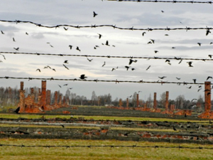 Crows, Birkenau 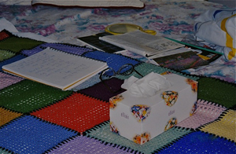 Death Bed 12/06 AUTZEN HOUSE, Oregon State University, Corvallis, Oregon CALYX's 30th Anniversary Art Exhibit 04/01/06 - 05/28/06 PATERSON MUSEUM, Paterson, New Jersey Crossing Boundaries: Visual Art by Writers 5/05 OREGON JEWISH MUSEUM, Portland, Oregon Exhibition and Auction 12/96 - 1/97 U-DEVELOP, Portland, Oregon -- photographs of Cambodia 9/93 - 12/93 MULTICULTURAL ARTS CENTER, Cambridge, Massachusetts Dangerous Locations and Vanishing Cultures: photographs of Cambodia MAGAZINES AND NEWSPAPERS 2006 "Nuns With Ceremonial Offerings," "Nun at Home," Calyx: Journal Of Art And Literature By Women 2002 “Nuns With Ceremonial Offerings,” Literature of Spirituality Special Edition, Many Mountains Moving 1999 “Nuns With Offering,” Bombay Gin 25, Naropa Press 01/99 “Recalling A Jewish New Year In the Old Country,” photo-essay: Jewish Review 04/99 “The Nuns of Monkol Won," photo- essay:Tricycle:The Buddhist Review 05/97 “Tropical Curaco Lure for Jewish Travelers,” photo-essay: Jewish Review 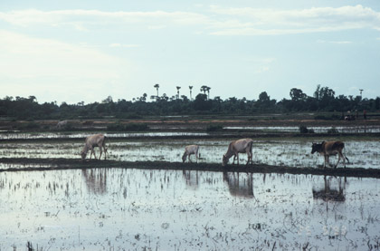 Reflection 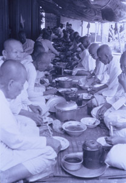 Nuns Eating 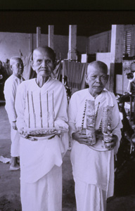 Two Nuns |
Click on a picture to enlarge. 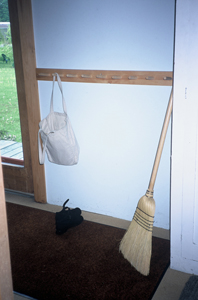 Broom 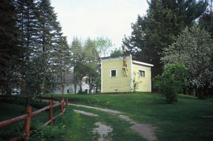 Yellow 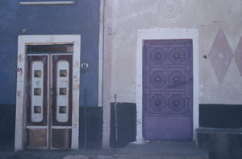 Purple 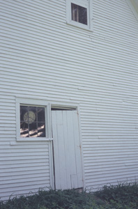 Time 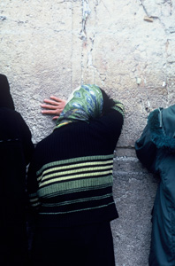 At the Wall 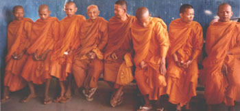 Monks Registering To Vote 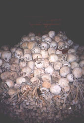 Killing Fields 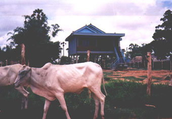 Village |